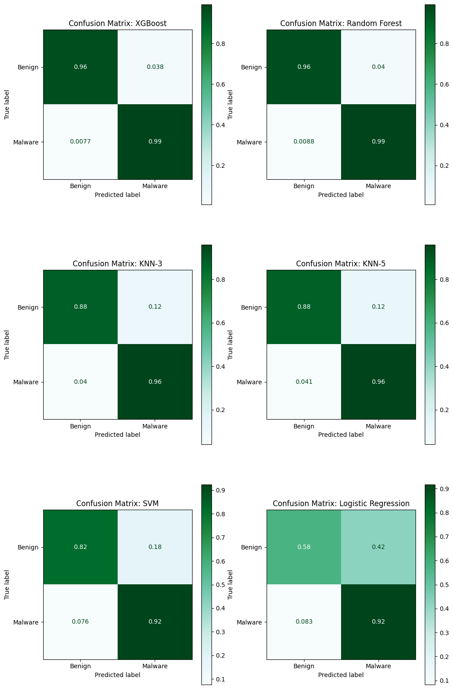
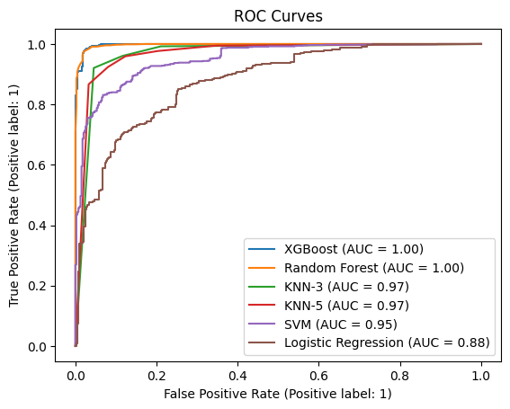
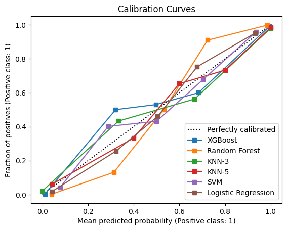
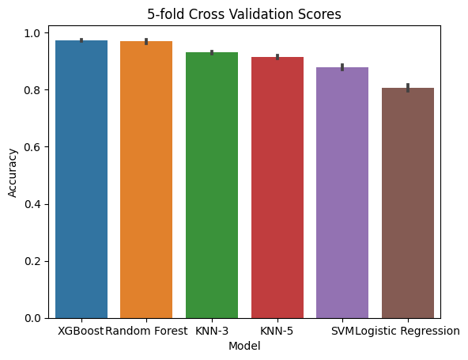
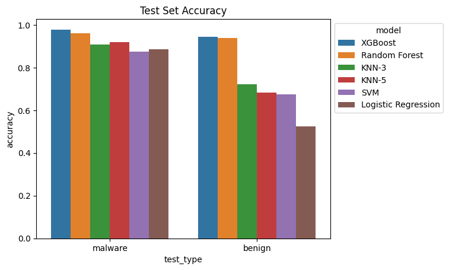
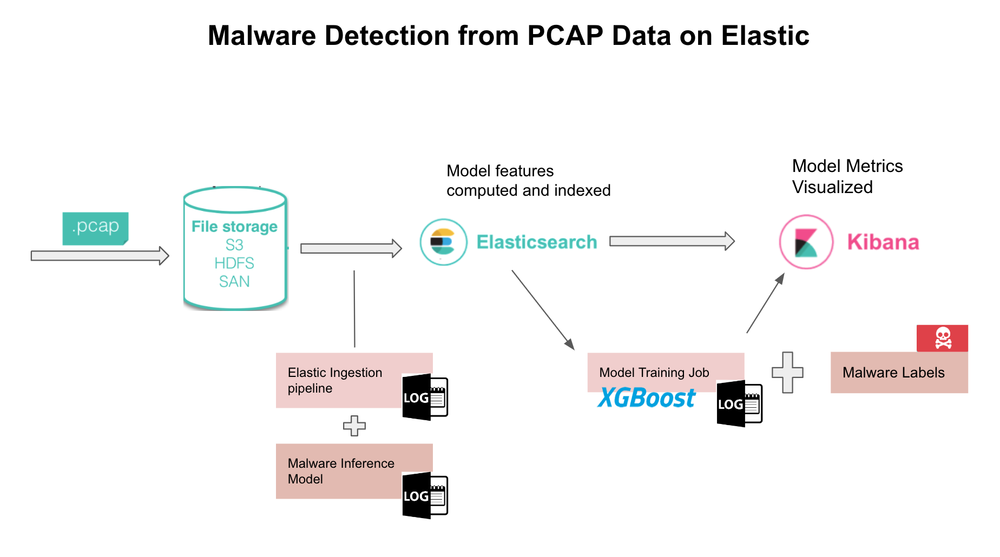

This report summarizes the work done in creating a classification model for malware detection from network captures (PCAP) files. The project is organized into a set of Jupyter notebooks located in the nbs directory, with the majority of the logic located in the nbs/00_core.ipynb notebook. Additionally, using the nbdev library, the code in the notebooks is exported to a python package located in the mdetect directory.
From the home directory of the project the python package can be installed using the following command:
#| eval: false
pip install -e .
The python package also defines three command line scripts which can be used to run the project from the command line. These scripts are defined in the 01_cli.ipynb notebook and are as follows:
malware-train: Train a model on a set of PCAP files, this will run the training loop given paths to directories containing the PCAP files for malware and benign samples. The model is saved to a pickle file and can be used for prediction (malware-predict).
malware-transform: Transform a set of PCAP files into a set of features which can be used for classification. This just performs the feature engineering step and saves the features CSV files for the flows provided alongside labels for the flows.
malware-predict: Predict the labels for a set of flows using a trained model. This will load a model from a pickle file and then use the model to predict the labels for the flows provided. Currently this script prints the number of malware flows identified in the file and the total number of flows in the file.
Each of these scripts can be run with the --help flag to get more information on the arguments required. This report is a high level overview of the project and the notebooks contain more detailed information on the implementation of the project.
1.1 Assumptions
For the purposes of this project I made the following assumptions about the customer need:
This model would be deployed on networks that aren’t in the training data, i.e. we don’t have PCAP files which can be used to build a baseline for benign traffic for the specific network. If this data is available then it could be used to improve the model performance.
The cost of missing malware is higher than the cost of mistakenly classifying benign traffic as malware generated. However, this difference isn’t extreme since mistakenly flagging benign traffic as malware will degrade trust in the ML pipeline and potentially annoy users.
The ML pipeline should be efficient enough to run at scale. Basically, don’t pick a model that is expensive or slow to run.
2 Feature Engineering
The first step in the project is to transform the raw PCAP data into a set of features which can be used for classification. For this I made use of the scapy python library and created some wrappers and data structures to process and store the data in the raw PCAP files. My strategy for processing the PCAP files was to focus on TCP/UDP traffic and separate the files into separate flows or sessions. These flows are defined by unique 5-tuples of (src_ip, dst_ip, src_port, dst_port, protocol), and then these flows were further broken down along the time dimension by splitting up packets within a flow along the time axis. The logic behind this step was the need for this model to generalize to new PCAP files which may have more or less benign traffic overlayed on the malicious traffic. From examining the PCAP files in Wireshark it looks like some of the malware files have been filtered already to highlight the malware traffic. The conversion from PCAP to flows should help reduce the impact of benign traffic on the model, and make the model more portable to new networks.
My overall technique focused on extracting features which should generalize well when applied to new network captures. Therefore, I tried to avoid using features that might be specific to the particular network used in the capture. For example, while I developed some features based on the Inner Arrival Times of the packets I avoided using these features in the final model as they would be specific to the network used in the capture. However, in the event that we have access to data collected on a single network, these features could be used to improve the model.
In the end I ended up constructing a set of 23 features (before one-hot-encoding) which I used in the final model. These features are as follows:
Code
from IPython.display import Markdownfrom tabulate import tabulatefeature_names = ['duration', 'pkts_rate', 'bytes_rate', 'mean_size', 'std_sizes','q1_sizes', 'q2_sizes', 'q3_sizes', 'min_sizes', 'max_sizes','num_pkts', 'num_bytes', 'flags_FIN', 'flags_SYN', 'flags_RST', 'flags_PSH', 'flags_ACK','flags_URG', 'flags_ECE', 'flags_CWR', 'src_port', 'dst_port', 'protocol',]feature_type = ['numeric'for _ inrange(20)] + ['categorical'for _ inrange(3)]descriptions = ["Duration of the flow", "Rate of packet flow", "Rate of bytes transmitted", "Mean size of the packets", "Standard Devation in Packet size", "First quartile in sizes", "second quartile (median) in sizes", "Third quartile in sizes", "minimum size", "maximum size", "Total number of packets", "Total bytes", "Total FIN flags", "Total SYN flags", "Total RST flags", "total PSH flags", "total ACK flags", "Total URG flags", "Total ECE flags", "total CWR flags", "Source port", "Destination ports", "Protocol (UDP/TCP/ICMP)"]feature_table =list(zip(feature_names, feature_type, descriptions))Markdown(tabulate( feature_table, headers=["Name","Type", "Description"]))
Table 1: The features used in the classification algorithms
Name
Type
Description
duration
numeric
Duration of the flow
pkts_rate
numeric
Rate of packet flow
bytes_rate
numeric
Rate of bytes transmitted
mean_size
numeric
Mean size of the packets
std_sizes
numeric
Standard Devation in Packet size
q1_sizes
numeric
First quartile in sizes
q2_sizes
numeric
second quartile (median) in sizes
q3_sizes
numeric
Third quartile in sizes
min_sizes
numeric
minimum size
max_sizes
numeric
maximum size
num_pkts
numeric
Total number of packets
num_bytes
numeric
Total bytes
flags_FIN
numeric
Total FIN flags
flags_SYN
numeric
Total SYN flags
flags_RST
numeric
Total RST flags
flags_PSH
numeric
total PSH flags
flags_ACK
numeric
total ACK flags
flags_URG
numeric
Total URG flags
flags_ECE
numeric
Total ECE flags
flags_CWR
numeric
total CWR flags
src_port
categorical
Source port
dst_port
categorical
Destination ports
protocol
categorical
Protocol (UDP/TCP/ICMP)
The PCAP files were processed into a set of these flows where each flow was labeled as being from a malicious capture (1) or a benign capture (0). I supplemented the benign PCAP files with two additional PCAP files since the benign data set provided has significantly fewer flows that the aggregate of the malware samples (these supplemental data sets are included in the data directory of the repo). The data was divided into a training and validation sets randomly with 30% being allocated to validation.
3 Model Selection
I tested a set of machine learning pipelines on this processed data set, as can be seen in the 00_core.ipynb. The confusion matrices for the model pipelines applied to the validation data flows are shown in figure Figure 1. The random forest and XGBoost classifiers perform the best achieving accuracies in the high 90’s.

Figure 1: Confusion Matrices: For ML pipelines showing the classification accuracy by true label
The confusion matrices error rates can be adjusted by adjusting the thresholds used to make a binary classification. To account for this ambiguity we can examine the ROC curves which show the true positive rate (TPR) vs the false positive rate (FPR) for the different models. The ROC curves for the different models are shown in figure Figure 2. The area under these curves is the AUC metric which is a measure of the overall accuracy of the model.

Figure 2: ROC Curves: For ML pipelines showing the classification accuracy by true label
We can also examine the model calibration which is a measure of how well the model probabilities match the true probabilities. The calibration curves for the different models are shown in figure Figure 3. The calibration curves show that each of the models are reasonably well calibrated.

Figure 3: Calibration Curves for the models: Which examines how meaningful the probability predictions are made by the models
I applied a 5-fold cross validation procedure for each of the model pipelines as well. The results of this cross validation are shown in figure Figure 4. The cross validation results show that the random forest and XGBoost classifiers perform the best overall, and each of these models have a small degree of variance in their performance. This indicates they haven’t been overfit to the training data.

Figure 4: Cross Validation Results: Showing the accuracy of the models on the training data
The principal metric I used in comparing models was the (AUC: Area under the Curve) based on ROC Curves for the models as seen in figure Figure 2. The random forest and XGBoost classifiers performed the best overall. This isn’t surprising since these models are the standard for tabular data classification problems like the one considered here. Overall I would recommend the XGBoost classifier because of its ease in implementation on the elastic stack (although random forests are almost as easy as well), speed of training and inference.
The poor performance for the SVM/Logistic Regression models is likely due to the fact that the data is not linearly separable. A neural network model will likely perform worse than these models (and indeed they do in my experimentation) since they assume some smoothness in the data which is not present here. The details for the models are outlined in the nbs/00_core.ipynb notebook.
Finally, after completing my analysis and model tuning I evaluated the ML models on a small test data set not used in training or validation. For this I used a PCAP file for malware not contained in the training or validation data available here. I also collected some benign results from my home network to evaluate the model on. These test PCAP files are located in the data/test directory. The results of the test are shown in figure Figure 5. The XGBoost model performs the best on the test data as well, with a small drop in the accuracy seen for the validation and cross validation data.

Figure 5: Test Results: Showing the accuracy of the models on the test data. Keep in mind this is a very small test set.
4 ML Ops Pipeline
Since the underlying classifier is the well known XGBoost classifier this whole stack can be configured to run on elastic cloud as a classification task. The model training can also be done on an elastic ML node using a data frame analytics job. Integrating with the elastic stack takes care of a lot of the ML Ops pipeline including feature registry, model versioning, and model deployment. Testing and monitoring can also be done within the elastic stack using a Kibana dashboard.
At a broad level the pipeline steps for inference are:
Transform a PCAP file into a set of flows and compute the summary features for each flow.
Call the XGBoost model to make a prediction on each flow.
Index the flows into elastic search with the prediction (malware probability) as a field.
Visualize the predictions and log key metrics.

Figure 6: ML Ops Pipeline: A diagram illustrating the elastic MLOps pipeline discussed in this report
In the figure Figure 6 I have illustrated a flow where the initial PCAP data is stored in AWS S3 and then inserted into elastic search using an ingestion pipeline. I is also possible that filtered PCAP data is streamed directly into a ingestion pipeline if that is a customer need. However, given the shear size of PCAP data files I have illustrated the pipeline with batched runs from an S3 bucket. This pipeline would effectively run featuring engineering pipeline PCAP -> Flows -> Statistics on the ingested PCAP data and insert the data into a elastic data frame.
In order to support a effective CI/CD pipeline I would advocate that this process is put under a CI/CD pipeline linked to a source repository, so that any changes to the malware-transform function are automatically deployed to the elastic cloud from the main branch of the repository. The next step in the pipeline is to call the machine learning model on new data inserted into elastic. A registered classification model within elastic can be added to a ingestion pipeline so that the malware probability prediction is added to the data as it is indexed into elastic.
Model training could also be performed within the elastic cloud using a data frame analytics job, or models can be trained externally and then registered using the eland library and the data frame analytics API. This also allows for the same key metrics I have outlined in the 00_core.ipynb notebook to be computed and logged within elastic. Including the classification accuracy, confusion matrix, ROC curves, and visualizations of this logged data.
For a deployed model we can also monitor the performance of the model using a Kibana dashboard. This dashboard can be configured to show the key metrics for the model and also to show the distribution of the malware probability predictions. This allows for the implementation of MLOps techniques like drift detection on the input data and changes in the model performance over time. Moreover, outlier detection and alerts can be configured to notify the user of anomalous behavior in the classifier predictions. For example, a sudden increase in the number of malware predictions could indicate a new malware attack or that some benign traffic has been misclassified as malware.
5 Conclusions
In this project I have demonstrated the use of machine learning to classify network traffic as either malicious or benign. I have shown that the XGBoost/Random forest classifiers perform the best overall in this task, after designing a feature engineering workflow to extract tabular data from raw PCAP files. I have also outlined a ML Ops pipeline for the training, deployment and testing of a malware prediction model within the elastic stack.
The next step in future work would be to scale up the amount and variety of data used to train the models. The high degree of variability in network traffic has hardly been captured in these demo data sets and more data is needed to do a complete assessment of the classifiers, especially in terms of their robustness to different types of malware and network traffic. Once I had collected additional data I would spend some additional time doing some hyper-parameter tuning on the XGBoost model to see if I could improve the performance of the model. I have used a bayesian optimization routine for this tuning in the past and expect it would work well under these circumstances.
As a more long term project I would like to explore the use of techniques from Natural Language Processing to malware detection from network traffic. The idea would be to translate the flows into a symbolic language describing the packets and then apply a transformer architecture to the problem. The ability of transformers to capture long range dependencies in sequences of symbols would be well suited to this problem. This model could be run alongside the XGBoost summary statistic approach as an ensemble model to detect malware signatures from the network traffic. Elastic has added support for NLP (hugging face) models and this would provide a good opportunity to explore this new feature.